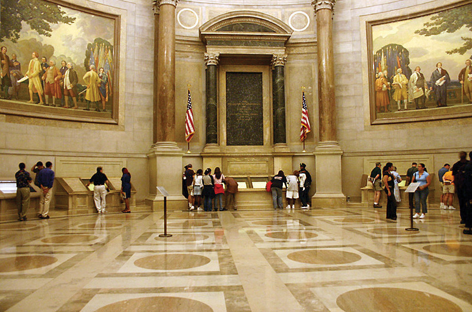
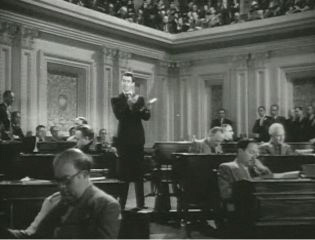

After reading this section, you should be able to answer the following questions:
We have seen that the Constitution is a political document adopted for political reasons in a highly political process. Yet the text of the Constitution, and the structure of power it created, are almost entirely above political controversy. It is an object of pride for almost all Americans.
The official presentation of the Constitution in public buildings show it as a sacred documentA revered manuscript given exalted status; applied to the Constitution., demonstrating its exalted status. The original document is ensconced in what is called a “Shrine” at the National Archives.
Figure 2.8
Not far from the “Shrine” in the National Archives, the twentieth-century re-creation by Howard Chandler Christy hangs in the US Capitol. The eye is carried toward the beatific glow around the document itself, George Washington standing proudly as its guardian. The atmosphere is of nobility, grandeur, and calm, not base self-interest and conflict—though the latter characterized the convention at least as much.
Source: Photo taken by Kelvin Kay, http://commons.wikimedia.org/wiki/File:ArchivesRotunda.jpg.
The media rarely show the Constitution or the structure of the political system as a cause of political problems. However, media depictions of the politicians charged with fulfilling the Constitution’s vision in public life are far less positive.
Let us return to our discussion at the beginning of this chapter. The news declared a “constitutional crisis” during the aftermath of the 2000 presidential election. The covers of Time, Newsweek, and US News & World Report all displayed the manuscript of the Constitution and its boldly emblazoned preamble, “We the People.” The stories reported the 4–3 vote by the Florida Supreme Court, which ordered a statewide recount of that state’s vote (the vote that would decide the national outcome), and the US Supreme Court’s 5–4 order to halt the recount and hear the Bush campaign’s appeal. Both Newsweek and US News & World Report superimposed the word “CHAOS” on the Constitution; Newsweek showed the word looming menacingly beneath the torn, seemingly fragile document.
All three news magazines lamented that the Constitution was threatened by unscrupulous, self-interested politicians intruding into the realm of dispassionate principle. To quote Newsweek, “The endless election has not been a grand contest of famous legal gladiators contesting broad constitutional principles…[but] a local fight, a highly personal shoving match driven by old grudges and vendettas.”Evan Thomas and Michael Isikoff, “Settling Old Scores in the Swamp,” Newsweek (December 18, 2000), 36–44, quotations on 38. Yet it was the complex electoral and federal system devised in the Constitution itself that caused much of the crisis.
Entertainment media occasionally present stories about the Constitution and the structure of power it created. Consider the familiar tale of a lone individual bravely fighting to restore a wayward political system to its virtuous roots. In the 1930s, Director Frank Capra perfected the genre in a series of Hollywood movies that reached its height in the classic 1939 film Mr. Smith Goes to Washington (Note 2.43 "Enduring Image").
Mr. Smith Goes to Washington
James Madison’s portrayal in the Federalist papers of sacrosanct institutions and fallible politicians finds its movie version in Frank Capra’s Mr. Smith Goes to Washington.Insightful analyses of the film include Brian Rose, An Examination of Narrative Structure in the Films of Frank Capra (New York: Arno Press, 1980), chap. 3; and Charles J. Maland, Frank Capra (Boston: Twayne, 1980), chap. 4. Upon its 1939 release, it was hugely popular and a critical success, second only to Gone with the Wind in box-office receipts and Oscar nominations. The title alone has recurred repeatedly in political talk across the decades ever since.
Mr. Smith begins when a senator dies. The governor, pushed to appoint either a party hack or a reformer, picks instead his sons’ “Boy Ranger” leader, resonantly named Jefferson Smith (James Stewart). The naive Smith heads to the capital under the wing of the state’s senior senator, Joseph Paine (Claude Rains), who entrusts Smith to the dead senator’s cynical secretary, Clarissa Saunders (Jean Arthur). Paine is a onetime associate of Smith’s father, a crusading editor, and has sold out to the state’s political boss. At Paine’s urging, Smith submits a bill proposing a national boys’ camp but later learns that the site has been bought by the boss to sell at a huge profit to the government for a dam Paine is proposing. Smith refuses to back down, and a fake corruption charge is launched against him with devastating results. About to resign in disgrace, Smith visits the Lincoln Memorial. Sustained by the love and political know-how of Saunders, Smith fights back by a filibuster on the Senate floor. The Washington reporters who had earlier scorned his innocence are transformed into his supporters by his idealism. But his home state hears little of this: the boss controls all radio stations and newspapers and brutally quashes any support. Smith faints in exhaustion when confronted with baskets full of trumped-up hate mail, but is saved when the guilt-ridden Paine tries to shoot himself and confesses to the corrupt scheme. The movie ends in a blaze of jubilation as the Senate president, apparently satisfied with Smith’s vindication, gives up gaveling for order.
Many observers see the message of Mr. Smith as reassuring: the system works, preserved by the idealist individual American hero. The founders and their handiwork are viewed as above criticism. During the climactic filibuster, Smith reads the Declaration of Independence and the Constitution, lecturing the senators, “Great principles don’t get lost once they come to light—they’re right here.”
The film endures because it is richly challenging: Mr. Smith is both a celebration in theory and an indictment in practice of the American political system.
Figure 2.9 Mr. Smith (James Stewart) Speaking in the Senate Chamber
Mr. Smith has been a template for media depictions of the American political system. The Reese Witherspoon vehicle Legally Blonde 2: Red, White and Blonde (2003) follows the same formula of an idealistic individual going to Capitol Hill and redeeming the promise of the political system against crooked politicians.
Why do the media today present a rosy picture of the Constitution and the political system it created? One historic reason is that opposition to the Constitution collapsed after the Bill of Rights was added to it in 1791. Within a few years, the Constitution was no longer an object of political controversy. Even during the Civil War, the ultimate “constitutional crisis,” both sides were faithful to the cherished principles of the Constitution—at least as each side read them.
The Constitution is the essential framework for the work of reporters as well as politicians. Reporters rely on order and regularity to perform their job day in, day out. The procedures established by the Constitution—such as how presidents are elected; how a bill becomes a law; how the president, Congress, and the Supreme Court vie for power—are the basis for continuing sagas that reporters narrate across days, months, even years.See Mark Fishman, Manufacturing the News (Austin: University of Texas Press, 1980).
The Constitution also gives the media an easy symbol with which they can display their idealism, a perhaps unattainable (and un-Madisonian) political system in which officials work efficiently, cooperatively, and selflessly in the public interest.
This positive media portrayal of the Constitution encourages reverence for the political system even when there is much criticism of the officials in that system.See Samuel P. Huntington, American Politics: The Promise of Disharmony (Cambridge, MA: Harvard University Press, 1981). Typical are the results of a public opinion poll conducted during 1992, a year marked by high public unhappiness with government. Not surprisingly, the survey showed that the public was highly critical of how the president and members of Congress were handling their jobs. But the public did not criticize the institutions of Congress and the presidency themselves. Ninety-one percent said they approved of “the constitutional structure of government.”John R. Hibbing and Elizabeth Theiss-Morse, Congress as Public Enemy: Public Attitudes toward American Political Institutions (New York: Cambridge University Press, 1995), 59. Political scientists John Hibbing and Elizabeth Theiss-Morse who conducted the research concluded, “People actually see two quite different political systems…Anything associated with the constitutional system elicits a positive response…To the extent there are problems with the political system it is because we have deviated from what was outlined in the Constitution, not because that outline was flawed.”John R. Hibbing and Elizabeth Theiss-Morse, Congress as Public Enemy: Public Attitudes toward American Political Institutions (New York: Cambridge University Press, 1995), 87, 104.
Yet many of the media’s indictments against politicians are for behaviors encouraged by the Constitution. Reporters and the mass media often criticize American politicians for “squabbling” and “bickering.” But the separation of powers, as the founders designed it, is supposed to encourage conflict within the legislature and between the three branches.
The Constitution is a remarkably terse document. Generations have worked to evolve its meanings in over two centuries of politics and policies. Americans may rarely question the Constitution itself, but they surely disagree and debate over how its principles should be applied. In the chapters to follow, we will see many contemporary examples of politics around the Constitution in the information age—from constitutional amendments, to disputes between the branches over the powers of each, to the meanings of the Constitution’s clauses when applied in public policy.
The media usually portray the Constitution and most of the institutions it established favorably and above politics. Yet, the Constitution was—and remains—a political document created and developed in political ways for political purposes. In part because of the media’s presentation, the public finds little to criticize in the Constitution, even as it is quick to disparage public officials. Nonetheless, the Constitution continues to be the object of political engagement in the twenty-first century.
Gregory Watson and the Twenty-Seventh Amendment
The message of civic education is the relevance and importance of politics. If the workings of the American political system are not what we like, there are ways to change structures, policies, and political practices.
An unusual example is provided by Gregory Watson.This example is taken from Richard B. Bernstein and Jerome Abel, Amending America: If We Love the Constitution So Much, Why Do We Keep Trying to Change It? (New York: Times Books, 1993), chap. 13. In 1982, as a sophomore at the University of Texas at Austin, Watson found a stimulating topic for a government class essay: The Bill of Rights, as drafted by Madison and passed by Congress, originally included twelve amendments. Only ten were ratified by the states and included in the Constitution.
In 1982, congressional pay raises were controversial, and Watson concluded that this issue made one of the two unratified amendments pertinent: “No law, varying the compensation for the services of the Senators and Representatives, shall take effect, until an election of Representatives shall have intervened.” Only six of the thirteen states had ratified this amendment by 1791. But Watson noticed that the amendment had no time limit. In his essay, he laid out the history of the amendment and urged that it be ratified by thirty-two more states. His instructor, dubious that a constitutional amendment could be revived after almost two hundred years, gave Watson’s paper a C.
Undeterred, Watson launched a campaign to get state legislatures to pass this congressional compensation amendment. His first successes were with Maine in 1983 and Colorado in 1984. The news media began paying attention. The story of legislators voting themselves pay raises and news of scandals over congressional perks of office resonated with the public; the momentum shifted in Watson’s favor. In 1992, Michigan became the thirty-eighth state to ratify the amendment. Congress recognized Watson’s efforts in what became the Twenty-Seventh Amendment to the Constitution—203 years after their congressional forebears had passed it.